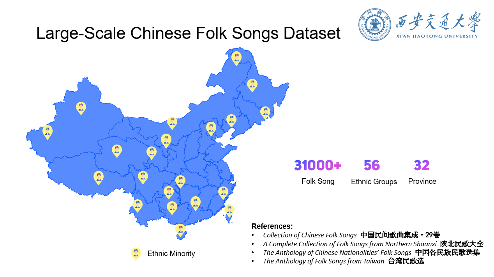

I have collected several symbolic music datasets, especially for Chinese music:

Over 31000 Chinese folk songs. More details will be added soon.
1214 Selected Han Chinese folk songs. Some examples can be found here.